Konturdiagramm in Projektionen einer Kugeloberfläche
Sphere-Surface-Projections-NetCDF
Zusammenfassung
Wenn Sie globale NetCDF-Daten importieren, zum Beispiel globale Temperaturdaten, können Sie ein Konturdiagramm in einer kugelförmigen Oberflächenprojektion erstellen.
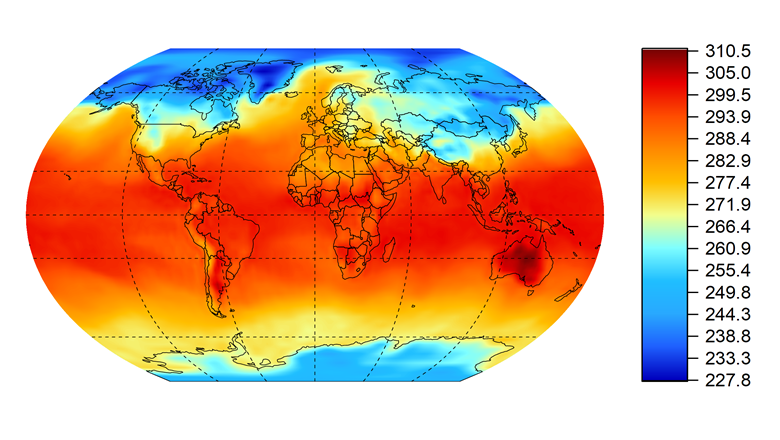
Origin-Version mind. erforderlich: 2016 SR0
Schritte
Eine auf NetCDF-Daten basierende Zeichnung auf einer kugelförmigen Oberflächenprojektion erstellen
- Öffnen Sie diese Projektdatei mit einer NetCDF-Datenmatrix.
- Aktivieren sie die Matrix und fügen Sie vier neue Matrixobjekte zum gleichen Matrixblatt hinzu.
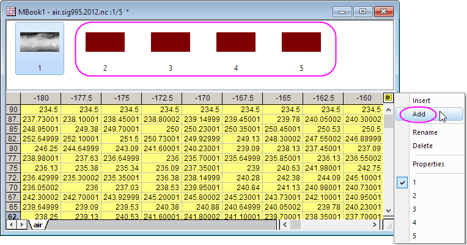
- Klicken Sie doppelt auf die Bildauswahl, um dieses Matrixobjekt umzubenennen in: Lon, Lat, x und y.
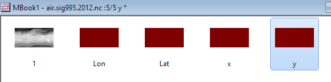
- Aktivieren Sie jede Matrix, klicken Sie auf die Schaltfläche Eigenschaften auf der Minisymbolleiste und wählen Sie Werte setzen. Geben Sie im Dialog Werte setzen jeweils folgende Formeln ein:
//Lon object x*pi/180 //Lat object y*pi/180 //x object 3*Mat(2)/2 * sqrt(1.0/3 - (Mat(3)/pi)^2) //y object Mat(3)
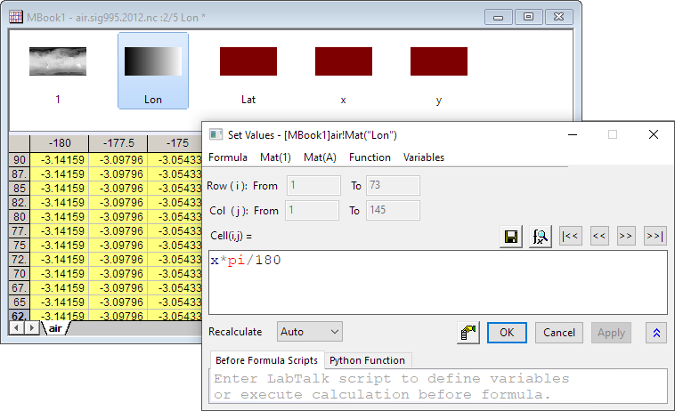
- Wählen Sie die erste Matrix in MBook1 und wählen Sie Zeichnen > Kontur: Kontur - Farbfüllung im Hauptmenü.
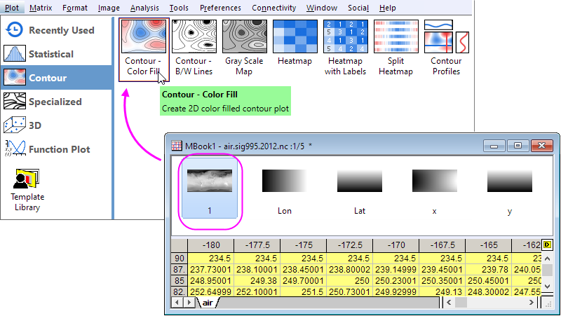
- Klicken Sie zum Öffnen des Dialogs Details Zeichnung doppelt auf das Diagramm. Navigieren Sie zur Registerkarte Kontur-Info, wählen Sie [MBook1]air!4"x"] und [MBook1]air!5"y"] in der Auswahlliste X-Koordinaten und Y-Koordinaten.
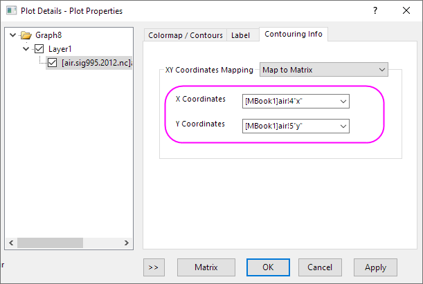
- Wählen Sie Layer1 im linken Bedienfeld und gehen Sie zur Registerkarte Anzeige/Geschwindigkeit. Deaktivieren Sie die Kontrollkästchen X-Achsen und Y-Achsen unter Elemente zeigen. Klicken Sie auf OK, um die Einstellungen zu speichern.
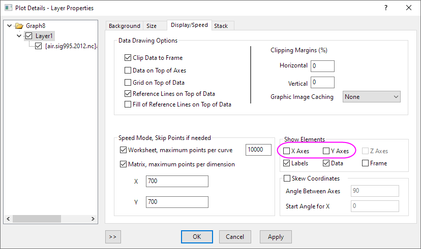
- Klicken Sie auf die Schaltfläche Neu skalieren.
- Löschen Sie die Achsentitel und den Titel der Farbskala. Das Diagramm sollte am Ende folgendermaßen aussehen.
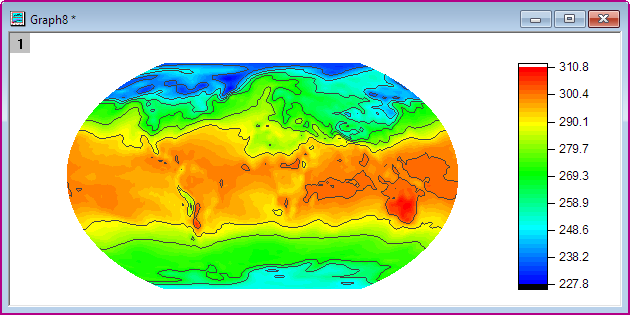
Ebenen, Linien und Farbpalette benutzerdefiniert anpassen
- Klicken Sie auf das Konturdiagramm und dann auf die Schaltfläche Konturstil auf der Minisymbolleiste. Wählen Sie Farbskala ohne Konturlinie.
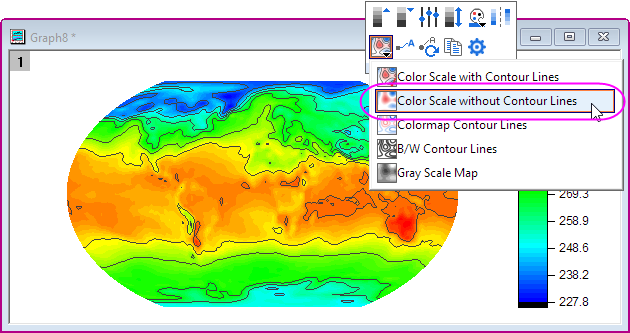
- Klicken Sie auf die Schaltfläche Ebenen festlegen auf der Minisymbolleiste. Klicken Sie auf die Schaltfläche Ebenen festlegen und setzen Sie die Hauptebenen auf 16 und die Nebenebenen auf 16. Klicken Sie auf OK.
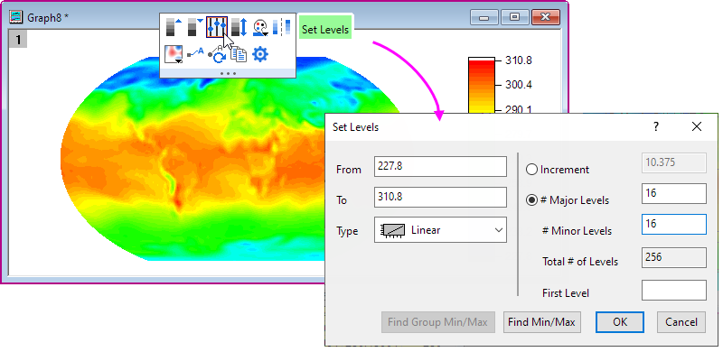
- Klicken Sie auf das Konturdiagramm und dann auf die Schaltfläche Paletten auf der Minisymbolleiste. Wählen Sie dann die Palette Surface in der Auswahlliste.
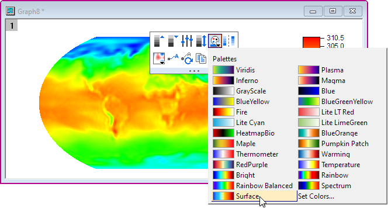
Sie erhalten dann ein Konturdiagramm ähnlich dem folgenden:
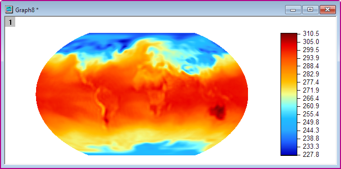
Kartenlinien und Gitternetzlinien hinzufügen
In der Arbeitsmappe gibt es Breiten- und Längengraddaten sowie Gitternetzliniendaten. Zuerst konvertieren wir diese in eine kugelförmige Oberfläche.
- Fügen Sie zwei Spalten als Spalte C und D ein, geben Sie in die Spaltenbeschriftungszeile der Formel F(x) 3 * A * pi / 180 / 2 * sqrt(1/3 - (B / 180)^2) für Col(C) ein und dann B * pi / 180 für Col(D).
- Fügen Sie zwei Spalten als Spalte G und H ein, geben Sie in die Spaltenbeschriftungszeile der Formel F(x) 3 * E * pi / 180 / 2 * sqrt(1/3 - (F / 180)^2) für Col(G) ein und dann F * pi / 180 für Col(H).
- Setzen Sie Col(C) und Col(G) auf X.
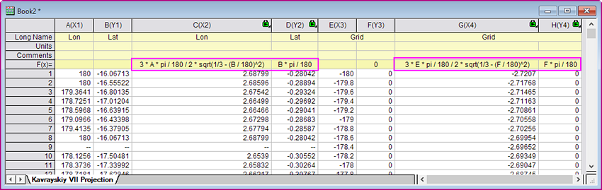
- Markieren Sie Col(D) und Col(H) und ziehen Sie sie per Drag&Drop in das Konturdiagramm. Klicken Sie doppelt auf das Diagramm, um den Dialog Details Zeichnung zu öffnen, und setzen Sie den Stil der Gitternetzlinien auf Strich.
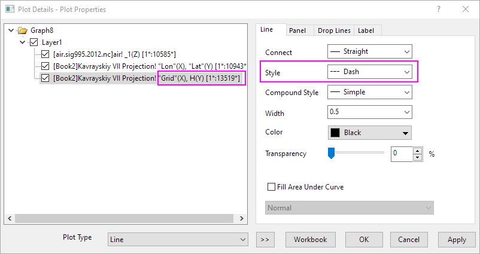
- Entfernen Sie die Legende für die Linien. Sie erhalten dann ein Konturdiagramm ähnlich dem folgenden: